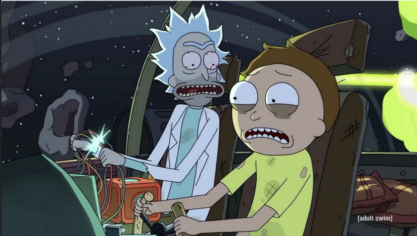

Hmmm, typical workflow, oh shiiiit, here we go again...
Let’s say, we are working hard1 on finishing our third custom game engine, as every proper programmer should – and then we realize: “What the hell am I doing? This shit again???”
The same behavioral pattern2 once again occurred:
- “Hmmm, let’s focus on rendering pipeline. It would be nice to see something on screen finally.”
- “But it’s a good idea to start working on ECS – well-designed, well-optimized – it will be a solid foundation I can rely on and build upon as development progresses.”
- “This seems like I’ll finish skeleton of my ECS in no time, but,… oh no… wait a minute… for optimized ECS3, using
std::vectoris a killer, and maybe there is a be better-fitting container.” - “So, I am writing my implementation of
PagedVector4 and suddenly realize: I need my own verbose implementation of zip function to iterate through multiple containers5.” - Do you see where I’m going with this? 6
- “Hmmmm, this is another relatively common feature. It shouldn’t be in my game engine project – it should be in my own templated
STLlibrary. - “When I am creating my custom library, I should make it well and fill some technical gaps in my skills.”
- “Alright, I got
clang-tidy,clang-format,docker, CI/CD,… onlyConanis missing now.” - “Hmmmmm, Now when I created multiple libs. I should learn what a plugin7 is, how to make them with Conan – and why.”
- “How should
PluginManagerhandle evolution of plugins during development?” - “WHY THE FUCK I am writing a Plugin manager? I thought I just want create simple game!”
- “I should learn from my mistake. Finally.”
- “Now I’m working out how create devlog on GitHub Pages and fine-tune this post.”
- He didn’t learn. Again. But at least he learned something.
How deep the rabbit hole goes?8
Do you prematurely optimize too?
-
Okay, we believe we are working hard. ↩
-
Last time we swore we’d never do it again – that next time, we’d be more careful. ↩
-
Which only matter when we’ve got really scaled-up data. ↩
-
PagedVector is data structure that relies on fixed-size arrays under the hood. ↩
-
A zip function is not in C++20 standard, but is coming in C++23. ↩
-
In and out. Twenty minute adventure.  ↩
-
Plugin in C++ is basically design pattern wrapping work with dynamic libraries. Dynamic libraries are pre-compiled and we can changed their binaries in compiled host application in runtime. We can develop host application and plugin independently. Their development is tied together via shared interface. ↩
-
I stole and cannibalized this example, even next sentence. By the way this is a longer footnote and i think it is still pretty cool, even prettier than shorter ones even though it does not say anything useful but whatever. ↩